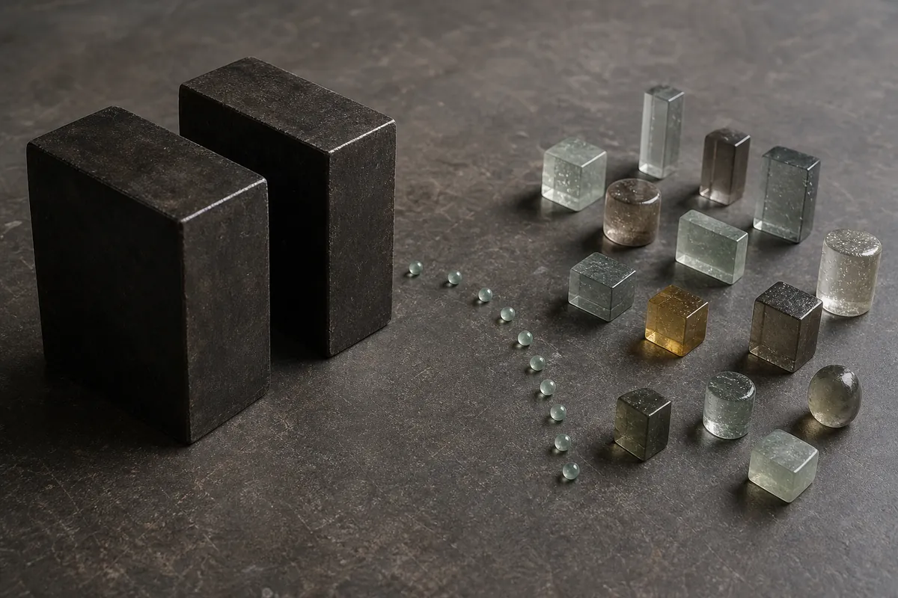

7월 27일 오전 한 문장 요약
주말 사이 나온 한국 메모리 기업과 미국 빅테크의 대형 협력 소식은 개장 직후 강한 갭상승을 만들었지만, 그 갭은 오래 유지되지 못했습니다. 시장은 장기 성장 스토리보다 직전 미국 기술주의 급락과 이미 높아진 국내 반도체 비중을 먼저 계산했습니다.
따라서 오전장의 핵심은 ‘호재가 틀렸다’가 아닙니다. 좋은 장기 뉴스와 부담스러운 단기 포지션이 같은 시간에 충돌했다는 데 있습니다. 삼성전자는 플러스를 지켰지만 시가보다 밀렸고, SK하이닉스는 상승 출발 뒤 약세로 돌아섰습니다. 반면 코스닥과 인터넷주는 상대적으로 강했습니다.
7월 27일 오전의 문제는 호재의 크기가 아니라, 그 호재를 받아낼 여유가 반도체 포지션에 얼마나 남아 있었느냐입니다.
오전 10시 10분 시장 대시보드
아래 값은 실시간 시세가 아니라 10시 10분 전후의 고정 스냅샷입니다. 숫자 자체보다 시가와 현재가의 간격, 그리고 업종 사이의 상대 강도를 보는 것이 중요합니다.
장중 시세: KOSPI·KOSDAQ·삼성전자·SK하이닉스·NAVER·KODEX 레버리지·달러/원. 연결 페이지는 최신 값으로 갱신되며, 본문에는 10시 10분 전후 값을 고정했습니다.
코스피는 전일 종가 6,690.62에서 개장가 6,806.27로 갭상승했지만, 10시 10분에는 6,705.10으로 상승분 대부분을 반납했습니다. 장중 저점은 6,677.34였습니다. 등락률만 보면 보합권이지만, 시가 대비 흐름은 뚜렷한 매도 우위였습니다.
같은 시각 코스닥은 약 3.35% 강세였고 NAVER도 약 9% 올랐습니다. 투자자별 순매수 자료를 함께 확인하기 전 자금 이동을 단정할 수는 없지만, 가격 흐름만 보면 반도체 대형주보다 다른 성장주가 강했던 장입니다.
9,500억 달러 호재의 의미: 주문서가 아니라 시간표
주말 뉴스의 규모는 압도적이었습니다. 보도된 협력 규모를 합치면 SK그룹·SK하이닉스와 엔비디아를 포함한 미국 기술기업의 장기 파트너십이 약 7,500억 달러, 삼성전자와 브로드컴의 협력이 2,000억 달러로 총 9,500억 달러에 이릅니다.
다만 이 숫자를 ‘오늘 바로 확정된 매출’로 읽으면 안 됩니다. 삼성전자와 브로드컴의 공식 발표는 메모리, 파운드리, 첨단 패키징을 아우르는 협력이 2030년까지 2,000억 달러를 넘을 것으로 추정한다고 설명합니다. SK하이닉스의 공식 발표 역시 엔비디아와의 다년 기술 파트너십에 초점을 맞춥니다.
즉, 이 뉴스가 확인해 준 것은 세 가지입니다.
- AI 인프라 투자 주기가 아직 끝나지 않았다. 메모리와 패키징이 미국 빅테크의 공급망 핵심으로 자리 잡았습니다.
- 한국 반도체의 협상력이 커졌다. 단순 납품을 넘어 기술 로드맵을 공동 설계하는 관계가 강화됐습니다.
- 가치가 실적으로 전환되는 데 시간이 필요하다. 계약의 범위, 연도별 매출 인식, 투자비와 마진은 앞으로 확인해야 합니다.
장기 투자자는 세 번째 문장을 기다릴 수 있지만, 장중 트레이더는 당일 수급을 봅니다. 그래서 큰 호재가 반드시 큰 양봉을 보장하지 않습니다. 이미 기대가 가격에 반영돼 있고 포지션이 한쪽으로 몰렸다면, 뉴스는 신규 매수보다 차익실현의 유동성을 제공할 수 있습니다.
금요일 미국 메모리주 급락의 잔상이 더 강했다
한국 시장이 문을 열기 직전 가장 가까운 글로벌 신호는 7월 24일 금요일 미국장이었습니다. 나스닥100과 반도체 ETF가 함께 밀렸고, 특히 메모리 관련 종목의 낙폭이 컸습니다.
| 자산 | 등락률 | 읽을 점 |
|---|---|---|
| QQQ | -1.1% | 대형 기술주 전반 조정 |
| SOXX | -4.3% | 반도체 업종의 뚜렷한 약세 |
| SMH | -3.2% | AI 반도체 대표군 동반 하락 |
| 엔비디아 | 약 -0.9% | 상대적으로 방어했지만 하락 |
| AMD | 약 -3.3% | 고평가 기술주 부담 |
| 마이크론 | 약 -7.0% | 메모리주 매도 집중 |
| 브로드컴 | 약 -2.7% | 파트너십 상대도 약세 |
| SK하이닉스 ADR | 약 -8.8% | 서울시장 가격에 직접 부담 |
미국 종가: QQQ·SOXX·SMH 역사 데이터와 7월 24일 미국장 마감 보도를 대조해 소수점 첫째 자리로 반올림했습니다.
주말 파트너십 뉴스는 이 충격을 상쇄하며 갭상승을 만들었습니다. 그러나 미국장에서 확인된 ‘AI 투자비 증가와 현금흐름 부담’이라는 질문까지 지운 것은 아닙니다. 서울시장 투자자는 호재와 동시에 미국 종가와의 가격 차이를 맞춰야 했습니다.
특히 SK하이닉스 ADR의 큰 하락은 월요일 국내 주가가 무시하기 어려운 기준점이었습니다. 개장 직후 1,814,000원까지 올랐다가 1,751,000원으로 밀린 흐름은 파트너십의 부정이라기보다 두 시장 사이의 가격 재정렬로 해석할 여지가 큽니다.
반도체 약세와 코스닥·인터넷 강세: 리밸런싱 가능성
오전장에서는 삼성전자와 SK하이닉스가 만든 시가총액 비중 때문에 코스피의 갭 반납이 크게 보였습니다. 반대로 코스닥과 인터넷주는 강했습니다. 투자자별 수급을 확인하기 전까지는 해석이지만, 이 가격 조합은 위험자산 전체의 이탈보다 이미 과밀해진 반도체 대형주에서 덜 오른 영역으로 무게중심이 옮겨갈 가능성을 시사합니다.

금융위원회가 7월 16일 발표한 단일종목 레버리지 상품 관련 조치도 위험 선호를 낮췄을 가능성이 있습니다. 관련 상품의 시가총액은 5월 27일 4.4조원에서 7월 15일 11.9조원으로 늘었고, 같은 기간 SK하이닉스와 삼성전자 기반 상품의 연환산 변동성은 각각 113%, 96%로 제시됐습니다. 두 종목의 코스피 비중이 7월 15일 기준 52%에 이르렀다는 점도 규제 당국이 집중 위험을 경고한 배경입니다.
신규 상장 중단, 광고·이벤트 제한, 괴리율 관리 강화는 기업의 펀더멘털을 바꾸지 않습니다. 하지만 레버리지 수요가 주가 상승을 증폭시키던 통로는 좁힐 수 있습니다. 큰 호재가 나온 날에 비중을 줄이려는 수요와 만나면 장 초반 매물이 더 빨리 나올 수 있습니다.
따라서 7월 27일 코스닥의 강세를 곧바로 ‘새 주도주 확정’으로 읽을 단계는 아닙니다. 다만 반도체가 시가를 회복하지 못하는 동안 코스닥과 인터넷이 상대 강도를 유지한다면, 적어도 오전의 가격 중심이 달랐다는 판단은 가능합니다.
메모리 실물 수급은 여전히 강하다
주가가 밀렸다고 산업 사이클이 즉시 꺾인 것은 아닙니다. AI 서버용 HBM, 고용량 DRAM, 기업용 SSD의 수요가 공급망 전반을 압박하는 구조는 이어지고 있습니다. 삼성전자·브로드컴과 SK하이닉스·엔비디아의 협력은 이 수요가 단기 유행이 아니라 여러 해에 걸친 인프라 계획이라는 점을 보강합니다.
다만 실물 가격이 강하다는 사실과 주가가 계속 상승한다는 명제는 다릅니다. 주가는 수요뿐 아니라 이미 반영된 기대, 설비투자 규모, 고객 집중도, 공급 확대 시점, 환율과 할인율까지 함께 계산합니다. 이번 주 실적 발표에서는 단순한 매출·이익보다 다음 질문이 중요합니다.
- HBM과 범용 DRAM의 출하량·가격 상승이 어느 정도 지속되는가
- 대규모 증설과 첨단 패키징 투자가 현금흐름에 주는 부담은 얼마인가
- 장기 협력 규모가 실제 주문과 연도별 매출로 어떻게 나뉘는가
- 고객의 AI 투자 확대가 공급사의 마진을 계속 지지하는가
결국 오전 조정은 ‘메모리 호황 종료’보다 장기 수요와 단기 밸류에이션 사이의 시간차를 반영한 움직임으로 보는 편이 타당합니다.
유가 하락은 긍정, 달러/원 상승은 경계
7월 24일 WTI는 배럴당 89.31달러로 3.12% 내렸고, Brent도 약 4% 하락해 96.78달러에 마감했습니다. 유가 하락은 에너지 수입국인 한국의 물가와 무역수지에 우호적입니다. 그러나 7월 27일 오전 달러/원은 1,465.82원으로 약 0.45% 올라 원화 약세를 나타냈습니다. 유가의 긍정 신호를 환율이 확인해 주지 못한 셈입니다.
유가 자료: AP, 7월 24일 미국 시장 마감·WTI 선물 마감 데이터.
원화 약세는 수출기업의 원화 환산 실적에는 도움을 줄 수 있지만, 외국인에게는 주가 수익을 깎는 요인입니다. 반도체 대형주의 갭상승이 유지되려면 종목 뉴스만으로는 부족하고, 외국인 수급과 환율 안정이 함께 필요합니다.
오후장에서는 달러/원이 장중 고점을 낮추는지, 외국인 현물·선물 매도가 진정되는지, 삼성전자와 SK하이닉스가 시가와 오전 고점 사이의 일부를 되찾는지를 함께 확인해야 합니다. 세 지표 중 하나만 좋아지는 반등은 지속력이 약할 수 있습니다.
장단기 금리차는 한 방향의 신호가 아니다
7월 24일 미국 국채 10년물과 2년물의 금리차는 0.36%포인트로 직전 0.34%포인트보다 벌어졌습니다. 반면 10년물과 3개월물의 차이는 0.73%포인트로 직전 0.76%포인트보다 좁아졌습니다.
| 금리차 | 7월 24일 | 직전 값 | 변화 |
|---|---|---|---|
| 10년-2년 | +0.36%p | +0.34%p | 소폭 확대 |
| 10년-3개월 | +0.73%p | +0.76%p | 소폭 축소 |
한쪽만 보면 경기 기대가 좋아졌다고도, 단기 금리 경로가 바뀌었다고도 말할 수 있습니다. 그러나 두 지표가 엇갈린 만큼 ‘경기침체 해소’나 ‘위험자산 강세’로 단정할 근거는 약합니다. 이번 주 FOMC와 GDP·PCE 발표 전에는 금리차보다 실제 금리 수준과 달러 반응을 함께 보는 편이 낫습니다.
7월 마지막 주에 확인할 일정
이번 주는 국내 메모리 실적과 미국 통화정책·빅테크 실적이 짧은 간격으로 겹칩니다. 오전의 수급이 주 후반까지 그대로 이어진다고 가정하기 어려운 이유입니다.
| 한국시간 | 일정 | 시장 질문 |
|---|---|---|
| 7월 27일 21:30 | 미국 6월 내구재 주문 | 기업 설비투자 수요가 유지되는가 |
| 7월 29일 09:00 | SK하이닉스 2분기 실적 | HBM 가격·출하와 투자 계획 |
| 7월 30일 새벽 | 미국 FOMC 결정 | 금리 경로와 유동성 기대 |
| 7월 30일 05:30 | Meta 실적 발표 후 콘퍼런스콜 | AI 설비투자와 현금흐름 |
| 7월 30일 10:00 | 삼성전자 2분기 실적 콘퍼런스콜 | 메모리·파운드리 수익성 |
| 7월 30일 21:30 | 미국 2분기 GDP·6월 PCE | 성장과 물가가 같은 방향인가 |
| 7월 31일 06:00 | Amazon·Apple 실적 콘퍼런스콜 | 클라우드·소비·AI 투자 강도 |
이 일정들은 같은 질문으로 연결됩니다. AI 투자가 실제 수요를 만들고 있는지, 그 투자비가 고객사의 현금흐름을 얼마나 압박하는지, 그리고 중앙은행이 높은 밸류에이션을 지탱할 유동성 환경을 허용하는지입니다.
7월 27일 오후 세 가지 관찰 시나리오
아래 구간은 10시 16분 당시의 관찰 기준입니다. 종가 예측이나 매매 신호가 아니라, 어떤 데이터가 오전 해석을 확인하거나 무효화하는지 정리한 조건표입니다. 오전 고가·저가와 갭 구간을 바탕으로 둔 넓은 범위이므로 경계값 자체보다 확인 조건을 우선해야 합니다.
반도체는 시가를 회복하지 못하지만 오전 저점도 크게 깨지지 않습니다. 코스닥·인터넷의 상대 강도가 이어지는 흐름입니다.
달러/원과 외국인 선물이 안정되고 삼성전자·SK하이닉스가 갭의 일부를 되찾습니다. 지수의 상승 종목 확산도 함께 확인돼야 합니다.
오전 저점 이탈 뒤 반도체 매도가 다른 업종으로 번지고, 원화 약세와 외국인 매도가 동시에 강화되는 경우입니다.
KODEX 레버리지는 10시 10분 전후 매수·매도호가가 116,445원과 116,490원, 시가 118,855원, 장중 저점 112,555원이었습니다. 이 상품은 일간 지수 수익률의 배수를 목표로 하며 변동 경로와 괴리율의 영향을 받습니다. 따라서 절대가격을 코스피 지수 구간에 기계적으로 대응시키기보다, 오전 위험선호의 온도를 확인하는 보조 지표로만 보는 것이 안전합니다.
최종 판단: 호재 소멸이 아니라 기대의 재가격
9,500억 달러 규모의 협력 뉴스는 한국 메모리 산업의 장기 경쟁력을 강화하는 재료입니다. 동시에 금요일 미국 기술주와 메모리주의 급락, 국내 반도체 쏠림, 단일종목 레버리지 규제, 원화 약세는 7월 27일 당장 그 가치를 가격에 더 얹기 어렵게 만들었습니다.
그래서 오전장의 갭 반납을 산업 전망의 붕괴로 읽는 것도, 코스닥 급등을 새로운 추세의 확정으로 읽는 것도 이릅니다. 오전 가격이 보여준 것은 시장이 장기 성장 스토리를 버렸다는 사실이 아니라, 그 스토리를 훨씬 높은 할인율과 더 엄격한 수급 조건으로 다시 계산하기 시작했다는 점입니다.
호재는 남아 있습니다. 다만 7월 27일 오전 시장은 그 호재를 얼마에, 어느 속도로 살 것인지를 다시 묻고 있습니다.
자료와 기준 시각
- 매일경제 증권 KOSPI·KOSDAQ와 네이버 금융의 삼성전자·SK하이닉스·NAVER·KODEX 레버리지·환율 — 2026년 7월 27일 10시 10분 전후 장중 스냅샷을 대조했습니다.
- Yahoo Finance QQQ·SOXX·SMH 역사 데이터와 7월 24일 미국장 마감 보도 — 미국 ETF·반도체 종가 등락률을 대조했습니다.
- AP, 7월 24일 미국 시장 마감·WTI 선물 마감 데이터 — WTI와 Brent 하락 폭을 대조했습니다.
- Samsung Global Newsroom — 삼성전자·브로드컴의 2030년까지 2,000억 달러 이상 협력 계획을 확인했습니다.
- SK hynix Newsroom — 엔비디아와의 다년 기술 파트너십 범위를 확인했습니다.
- Reuters — 두 협력 발표의 합계 규모와 발표 맥락을 대조했습니다.
- 금융위원회, 단일종목 레버리지 ETF·ETN 대응방안 — 시장 규모, 변동성, 종목 집중도와 조치 내용을 확인했습니다.
- FRED 10년-2년 금리차·FRED 10년-3개월 금리차 — 7월 24일 값을 사용했습니다.
- 미국 Census Bureau 발표 일정·연준 FOMC 일정·미국 BEA 발표 일정 — 미국 지표와 통화정책 일정을 확인했습니다.
- 삼성전자 IR·SK하이닉스 IR 공시·Meta IR·Amazon IR·Apple IR — 실적 발표 시각을 대조했습니다.
장중 가격은 데이터 제공처와 체결 시각에 따라 조금씩 다를 수 있습니다. 현물 메모리 가격처럼 수시로 갱신되는 자료는 현재 화면이 글 작성 당시 값과 다를 수 있으므로, 이 글의 숫자는 2026년 7월 27일 10시 16분 KST 기준으로만 해석해야 합니다.